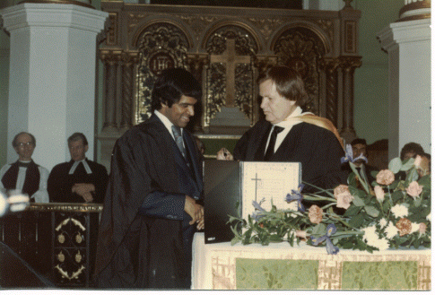

Prophecy 2017:

Good news. Finally our video of Anton describing the vision is posted below as he shares the Prophetic Word. It is recommended viewing.
We are witnessing the manifestation. Our prayer life is further enhanced and increased in much joy.
A Prophetic Word for 2017.
As mentioned on the design card below. The Prophetic Word commences from the United Kingdom and will spread to the Nations of the World.

First observation in Reading. Evangelism breakthrough May 2016.
A report of an unprecedented openness to the Gospel in Reading, United Kingdom. Over a 1000 people made a commitment to Christ. The Pastor was shocked at what happened on the first night. He has always believed that the Gospel is the Power of God unto Salvation. He would not compromise on the Gospel that Jesus died for our sins and the Power of the Blood of the Risen Saviour. This is reminiscent of the powerful teaching of the late Derek Prince. I faithfully listen to Derek Prince teachings.
These reports of an awakening were first circulated after a Florida Evangelist Tommie Zito began holding meetings at the Gate Church in Reading to train local Christians in evangelism. This resulted in 70% of the congregation going out on the streets, engaging with people and sharing the Gospel. Over 1850 people gave their lives or prayed the prayer of commitment to Jesus Christ.
Please take note of this 'Glory Call.'
Pastor Yinka Oyekan first began by telling how he received an unusual call about the vision for a mission in Reading from the General Secretary of the Baptist Union of Great Britain, Lynne Green.
She had received a vision the night before about a Glory Cloud over the country and she described it as beacons of fire which were about prayer. What she described is a Glory Cloud above the nation and this was hitting Reading first. This was hugely significant to the Pastor but also quite a surprise to him hearing from the head of the Baptist Union!
We are also hearing incredible reports of what the Holy Spirit is doing in the Northern part of the United Kingdom. In one particular Church about 60 Iranians have become Christians and they are very involved in the Alpha Course. So the Holy Spirit is indeed stirring.
Significantly the Reverend Jean Darnall prophesied this prophetic vision 49 years ago. The year was 1967. So we are entering the 50th Year now. The Year of the Jubilee.
We know Jean Darnall for I graduated from her Bible School where her husband Elmar Darnall was the Principal. View photo below.


So do browse through and read: 'The Closeted Thoughts of a Son of a Banker.' What actually happened to Anton Nicholas and family after his graduation. It will make a fascinating and a challenging read.

Occasionally our Precious Jesus had to intervene miraculously in our lives. The testimonies are therein.
We need to plant here without any optional caveats the challenging words of A. W. Tozer, “It is doubtful that God can use anyone greatly until He has hurt him deeply”.
Or to paraphrase the famous words of Pastor Charles R. Swindoll, “Before God can use a man He has got to crush him.”
Psalm 51
17) My sacrifice [the sacrifice acceptable] to God is a broken spirit; a broken and a contrite heart [broken down with sorrow for sin and humbly and thoroughly penitent], such, O God, You will not despise.
I have joined the Twitter Club and will now be tweeting @AntonNicholas1. Do joyfully follow and track my tweets and may you be blessed!
We want to acknowledge our Lord's blessings on this website. It was blessed and inaugurated officially on 1 August 2002.
Flag Counter
The counter below was introduced for the first time on 8th January 2014. Sadly the firm who installed my previous beautiful counter many years ago, and filled it with exciting statistics, suddenly went out of business. As a result we lost all our treasured statistics.
We like national flags portraying on our website so we are re-introducing the flag counter freshly again, (January 2014) through another firm. It is so exciting to see visitors coming from the far corners of the earth!